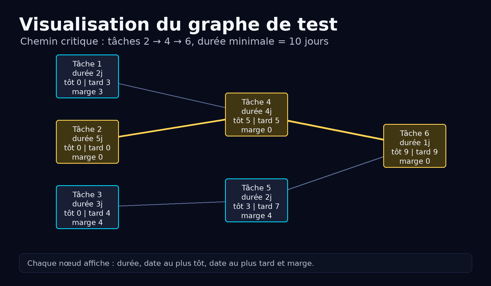
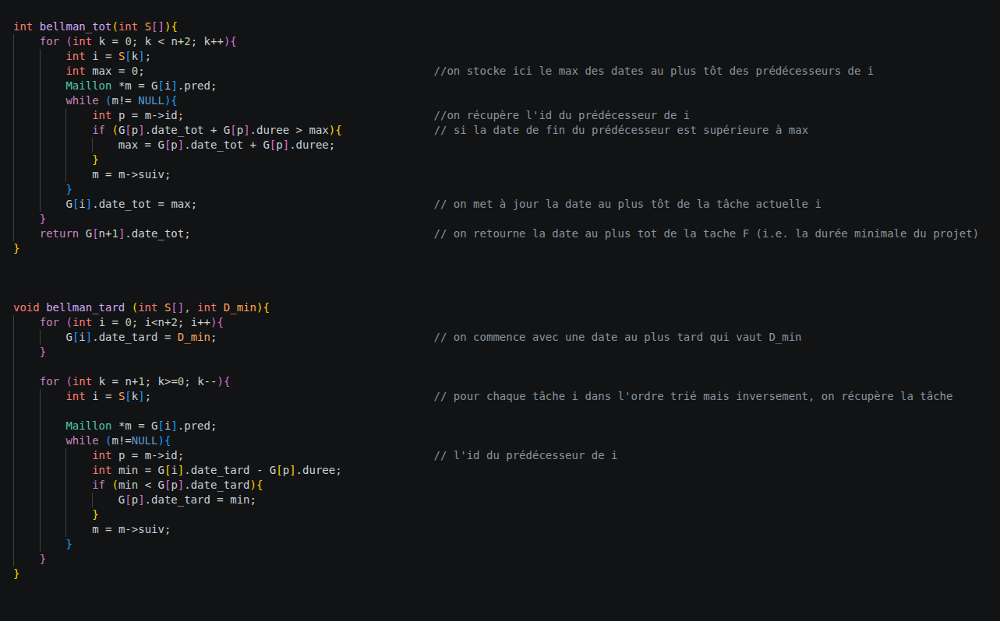
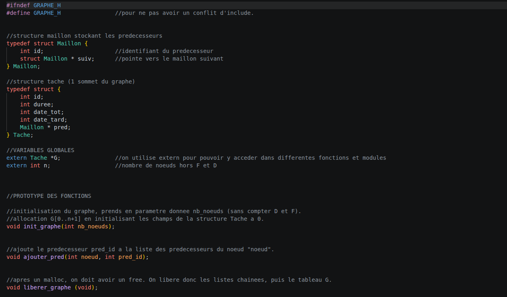
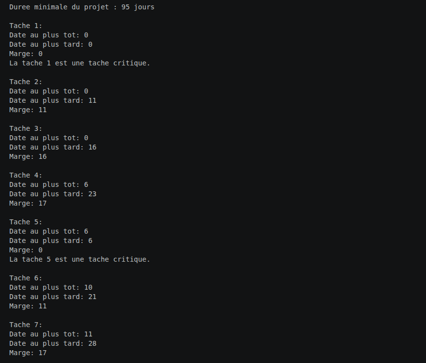

Ingénieur en Informatique
Bienvenue sur mon portfolio. Étudiant en cycle ingénieur à Polytech Lille, spécialisé en Informatique, Statistique et Intelligence Artificielle et fort d'une double compétence alliant la rigueur des Mathématiques à la puissance du développement logiciel, je conçois des solutions techniques robustes et orientées données. De la modélisation d'architectures complexes à la création de dashboards interactifs sous Power BI, mon objectif est simple : transformer la donnée brute en levier de performance.
Sélectionnez une langue ci-dessus.
Découvrez mes réalisations techniques. Cliquez sur un projet pour en savoir plus.

PostgreSQL • Modélisation • Web
Conception d'une architecture de base de données complexe pour gérer vols, équipages, passagers et billetterie.

Langage C • Algorithmique • Tests
Implémentation complète d'un jeu de plateau stratégique avec logique de capture par encadrement et validation automatisée.

Langage C • Algorithmique • Ordonnancement
Implémentation d'algorithmes de graphes pour le calcul du chemin critique et la visualisation interactive de l'ordonnancement de tâches.
PostgreSQL • Modélisation de Données • Architecture Web
👥 Projet académique réalisé en binômeConception et développement d'un système de gestion de base de données complexe pour une compagnie aérienne. L'objectif principal était de modéliser une architecture robuste sous PostgreSQL permettant de gérer les interactions entre les vols, les équipages, les passagers et la billetterie.
Légende : PK = Clé Primaire, FK = Clé Étrangère (#), DMS = Date de Mise en Service
PAYS (ID_pays [PK], Nom)
TYPE_AVION (Code_type [PK], Fabricant, Modèle, Nb_sièges)
AEROPORT (Code_IATA [PK], Ville, Nom)
FONCTION (ID_fonction [PK], Libellé)
PASSAGER (ID_passager [PK], Nom, Prénom, Date_Naiss, Tel, email)
COMPAGNIE (ID_compagnie [PK], Nom, #ID_pays [FK → PAYS])
AVION (ID_avion [PK], DMS, #ID_compagnie [FK → COMPAGNIE], #Code_type [FK → TYPE_AVION])
EMPLOYE (ID_employé [PK], Nom, Prénom, Num_poste, #ID_compagnie [FK → COMPAGNIE], #ID_fonction [FK → FONCTION])
FIDELITE (ID_compte [PK], SoldeMiles, Statut, DateAdhesion, #ID_passager [FK → PASSAGER])
VOL (ID_vol [PK], Ref_vol, Date_départ, Date_arrivée, Statut_de_vol, #Code_IATA_depart [FK → AEROPORT], #Code_IATA_arrivee [FK → AEROPORT], #ID_avion [FK → AVION])
MAINTENANCE (ID_maintenance [PK], Date_entretien, Rapport, #ID_employé [FK → EMPLOYE], #ID_avion [FK → AVION])
BILLET (ID_billet [PK], Date, Num_siège, Validation, Classe, #ID_passager [FK → PASSAGER], #ID_vol [FK → VOL], #ID_employé [FK → EMPLOYE])
GESTION_BAGAGES (ID_bagage [PK], Poids, Statut, #ID_billet [FK → BILLET])
AFFECTATION_EQUIPAGE (Rôle, Responsable, #ID_vol [PK, FK → VOL], #ID_employé [PK, FK → EMPLOYE])
CERTIFICATION (Date_obtention, Libelle, #ID_employé [PK, FK → EMPLOYE], #Code_type [PK, FK → TYPE_AVION])
PARTICIPE (#ID_employé [PK, FK → EMPLOYE], #ID_maintenance [PK, FK → MAINTENANCE])
JOIN) pour agréger les données de l'équipage, de l'avion et
des passagers sur une seule vue détaillée en fonction de l'ID du vol.


INSERT) et la
mise à jour (UPDATE) des employés.
Langage C • Algorithmique • Tests (Valgrind)
Implémentation complète d'un jeu de plateau en langage C respectant strictement un cahier des charges complexe. Ce projet met l'accent sur la rigueur algorithmique, la gestion de la mémoire et la validation par des tests automatisés.
while).


0 leaks possible).Langage C • Algorithmique • Ordonnancement
Implémentation en C d'un programme d'ordonnancement de projets à partir d'un graphe de tâches. Le programme calcule automatiquement les dates au plus tôt, les dates au plus tard, les marges et identifie les tâches critiques afin de déterminer la durée minimale du projet.


.h pour les structures et prototypes.